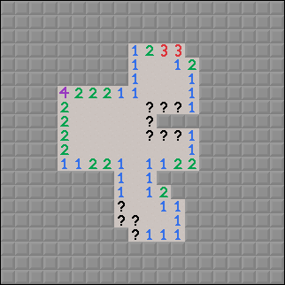

Week 1 - Magnetic Mines
|
 Hallo
 Hallo
 Hallo
 Hallo
Hallo
Death in:
0:05.000
Time: 0:00.000
|
In December of 2018, a Discord user by the name of Joshua created an advent calendar.
This advent calendar contained thirty unique Minesweeper challenges, plus the ability to create your own at the end. However, no one actually utilized the true custom mode for anything besides recreating Conway's Game of Life, until now.
I will be creating new Minesweeper challenges in the general style of the advent calendar.
Now, this will be slightly different from the original advent calendar Joshua created. First of all, new challenges will come weekly instead of daily.
They will come every Monday at 6:00 PM EST (the same time the original advent calendar days were released), which gives this new pseudo-advent-calendar it's name: MineDay.
Secondly, you'll have to download each week separately, instead of just going to the website. Keep a folder for them!
The first week features a new type of mine, the Magnetic Mine.
Each square without a mine typically contains a sensor which senses the mines in its surroundings. This sensor is usually accurate. However, Magnetic Mines cause sensors near them to stop working, and instead display a question mark.
Although this may seem like it requires a lot of guessing, it really isn't any worse than anti mines.
A field might look like this after the first click:

The board is also a torus, to minimize required guessing near the edges.
To flag a Magnetic Mine, simply right click an already-flagged tile.